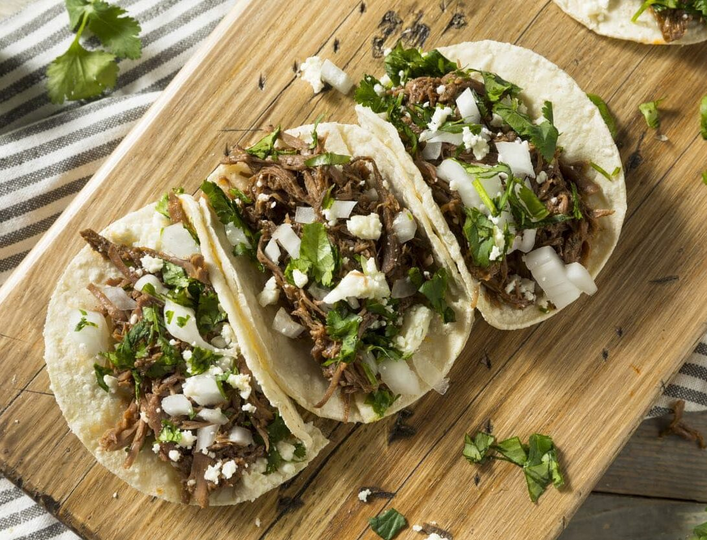

Tacos

Ingredients
Carne Asada
Onions
Lime and Cilantro
Tortilla
Steps
Step One: Grill Carne Asada
Step Two: Chop Onions and Cilantro
Step Three: Put Carne Asada and Onions on Tortilla, Add Lime Juice and Cilantro
Step Four: Enjoy!